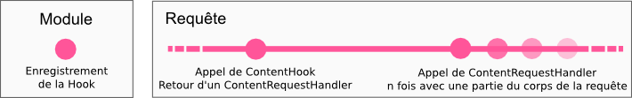

Un rapide tour d'horizon de l'API Bref.
Notre API est basée sur un système de pipeline, à la fois simple et complet sur lequel s'enregistre les modules du Zia grâce à un système de points d'encrage (hooks), représentés sur le schéma ci-dessus par des points roses. Vous trouverez le détail de chacun d'entre eux en passant votre pointeur dessus.
Les hooks sont enregistrés par le module en précisant la priorité d'exécution de celui-ci. Chaque hook est appelé une seule fois par requête et peut retourner un RequestHandler qui sera appelé une ou plusieures fois (callback) en fonction du contexte.
Par exemple, on aurait un module CGI qui piperait le corps d'une requête POST sur un processus CGI : php-cgi.
La classe du module héritant de IModule enregistrerait un hook
ContentHook.
Cet hook serait ensuite appelé lors d'une nouvelle requête et vérifierait par exemple que l'extension soit ".php", exécuterait alors un processus php-cgi, définirait le fd correspondant standard du processus et retournerait un ContentRequestHandler.

La premère fonction du ContentRequestHandler fournit par le hook serait appelé avec un morceau du corps de la requête jusqu'à ce que tout le corps ait été fourni.
La seconde serait appelé lors de la réception par le serveur de données sur le fd fournit, c'est à dire lorsque le processus PHP écrira du contenu sur sa sortie standard.
» Voir nos exemples de modules
La gate gère les communications avec l'extérieur et la génération des données.
| Nom du hook | Description | Exemple d'utilisation |
|---|---|---|
| ConnectionHook | Appelé lors de la connexion d'un client. | Blacklist |
| OnReceiveHook | Gestion de la lecture des sockets (derrière un système d'évènements tel que select qui signale la présence de données disponibles sur la socket client). On pourra lire directement sur la socket ou alors utiliser une couche SSL comme avec SSL_read(). | SSL |
| OnSendHook | Appelé lorsqu'il y a des données à écrire sur les sockets. | SSL |
L'UpStream correspond aux actions effectuées avant la génération du contenu de la réponse.
| Nom du hook | Description | Exemple d'utilisation |
|---|---|---|
| PostReadHook | Appelé après avoir reçu des données et avant l'exécution du parsing du header. | ? |
| ParsingHook | Hook procédant au parsing de la requête HTTP. | Parsing |
| PostParsingHook | Appelé après le parsing du header HTTP. | Réécriture d'URL |
Le bridge génère le contenu de la réponse, statique ou dynamique.
| Nom du hook | Description | Exemple d'utilisation |
|---|---|---|
| ContentHook | Appelé pour générer le contenu de la réponse. Le handler doit fournir deux méthodes différentes : une d'entrée qui récupère le corps de la requête et une qui génère le corps de la réponse. | CGI, Contenu statique, Listing des dossiers |
Le DownStream génère la resultat final (encodage, compression, etc.).
| Nom du hook | Description | Exemple d'utilisation |
|---|---|---|
| PostContentHook | Appelé après la génération de contenu de la réponse, avec un buffer contenant des "morceaux" du contenu généré. | Cache côté serveur, Substitution |
| TransformHook | Transformation du contenu de la réponse. | Encoding, compression |
| PreSendHook | Appelé juste avant l'écriture de la réponse sur la socket | ? |
Chaque hook prendra une référence sur une structure en paramètre contenant "l'environnement" de la requête, c'est à dire la configuration du serveur et un logger.
La configuration utilise un container, BrefValue,
qui embarque plusieurs types et permet
d'importer facilement des configurations YAML, XML ou JSON.
Le serveur Zia devrait implémenter des méthodes d'aide à la récupération d'éléments de configuration viables en fonction de l'environnement : corps du serveur, VirtualHost, etc.
Afin de faciliter le log d'erreurs dans les modules, un logger est passé en paramètre aux hooks. Il suffit d'utiliser les macros fournies utilisant notre ScopedLogger pour construire un message à logger :
LOG_ERROR(env.logger) << "My Error : " << 42;
Les requêtes et réponses HTTP utilisent aussi le conteneur BrefValue
pour stocker les différents headers, permettant d'implémenter des potentielles méthodes d'aide
communes entre votre configuration et vos requêtes, par exemple pour parser des dates.